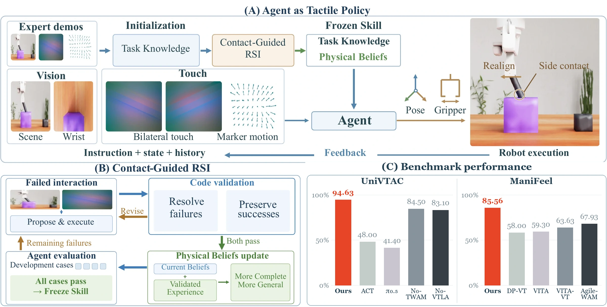
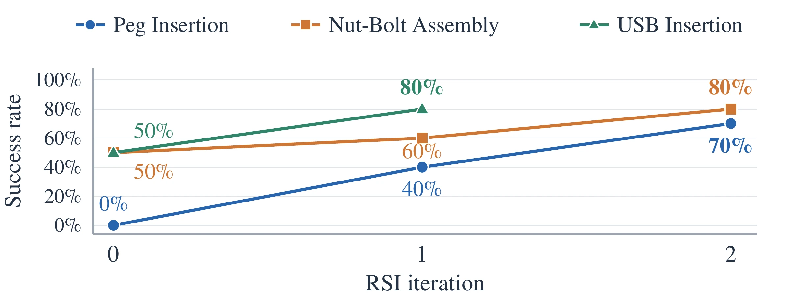
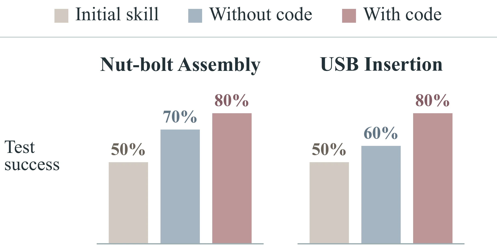
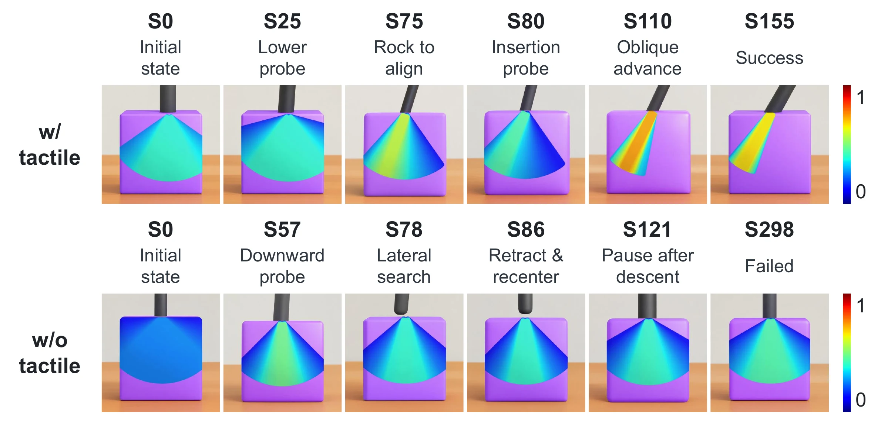

Agent-as-Tactile-Policy
Refining Physical Understanding
Through Contact.
Agents as Tactile Policies for Robotic Manipulation
A frozen multimodal agent uses expert experience and tactile interaction to generate actions and refine physical beliefs.
Abstract
General-purpose multimodal models have shown promise as direct robot action policies, yet whether they grasp the physics underlying real-world interactions and can apply that understanding to guide action remains underexplored. In contact-rich manipulation, an agent must understand how contact constrains object motion to determine why an action fails and how to adjust it. We present Agent-as-Tactile-Policy (ATP), which enables a frozen general-purpose multimodal model to directly generate actions from visual and tactile observations and interaction history. Expert demonstrations provide task knowledge and initial physical beliefs about action effects, but these beliefs still need to be tested through the agent's own interactions. Through Contact-Guided Recursive Self-Improvement (RSI), ATP writes and executes code to explore alternative actions and test and refine these beliefs based on the resulting physical responses. Without additional robotics-specific pretraining or per-task policy fine-tuning, ATP achieves state-of-the-art performance on the UniVTAC and ManiFeel simulation benchmarks and outperforms fine-tuned baselines in real-world manipulation. Our results show that tactile interaction helps test and refine physical understanding, leading to more effective contact-rich manipulation.
Method
Expert experience.
Physical interaction.
Task knowledge initializes the agent. Contact-Guided RSI tests and refines physical beliefs before online execution.

Initial task context
Task Skills and fixed ICL examples connect expert actions to their physical effects.
Contact-Guided RSI
Explore recoveries, verify execution, and update physical beliefs.
Frozen online control
Use current observations and episode history to probe, correct, and advance.
Simulation benchmark
UniVTAC
8 tasks · 100 seeds per task
94.63%Mean success
Insert Tube
Insert HDMI
Lift Can
Lift Bottle
Pull-out Key
Put Bottle in Shelf
Grasp Classify
Complete results Success rate (%)
| Method | Insert Hole | Insert Tube | Insert HDMI | Lift Can | Lift Bottle | Pull-out Key | Put Bottle in Shelf | Grasp Classify | Mean |
|---|---|---|---|---|---|---|---|---|---|
| ACT + UniVTAC | 24 | 56 | 28 | 29 | 71 | 46 | 31 | 99 | 48.00 |
| π₀.₅ | 25 | 74 | 8 | 6 | 100 | 35 | 34 | 49 | 41.40 |
| N₀-VTLA | 95 | 99 | 25 | 88 | 99 | 99 | 60 | 100 | 83.10 |
| N₀-TWAM | 99 | 98 | 68 | 93 | 58 | 79 | 87 | 94 | 84.50 |
| ATP (Ours) | 99 | 92 | 83 | 93 | 95 | 100 | 97 | 98 | 94.63 |
Simulation benchmark
ManiFeel
9 tasks · 50 seeds per task
85.56%Mean success
Peg Insertion
USB Insertion
Power Plug Insertion
Gear Assembly
Nut-bolt Assembly
Bulb Screwing
Peg Reorientation
Object Search
Ball Sorting
Complete results Success rate (%)
| Method | Peg Insertion | USB Insertion | Power Plug Insertion | Gear Assembly | Nut-bolt Assembly | Bulb Installation | Peg Reorientation | Object Search | Ball Sorting | Mean |
|---|---|---|---|---|---|---|---|---|---|---|
| DP-VT | 40 | 56 | 58 | 66 | 81 | 81 | 28 | 52 | 60 | 58.00 |
| DreamZero | 8 | 0 | 8 | 18 | 20 | 34 | 16 | 0 | 36 | 15.56 |
| Tactile-WAM | 16 | 2 | 18 | 38 | 40 | 68 | 34 | 4 | 74 | 32.67 |
| π₀.₅ | 10 | 10 | 28 | 22 | 30 | 36 | 42 | 56 | 96 | 36.67 |
| VITA | 44 | 55.33 | 54.67 | 68.33 | 86.67 | 71.33 | 41.33 | 40 | 72 | 59.30 |
| VITA-VT | 47.33 | 59.33 | 63.33 | 68.67 | 92 | 87.33 | 28.67 | 36 | 90 | 63.63 |
| Agile-WAM | 49.33 | 62 | 59.33 | 70.67 | 92.67 | 92.67 | 42 | 50.67 | 92 | 67.93 |
| ATP (Ours) | 74 | 70 | 84 | 84 | 74 | 90 | 94 | 100 | 100 | 85.56 |
Real-world experiments
Real
3 tasks · 10 trials per task
80 / 80 / 100%Hanoi / Bulb / Grasp Classify
Hanoi
Bulb Screwing
Grasp Classify
Complete results Success rate (%)
| Method | Hanoi | Bulb Screwing | Grasp Classify |
|---|---|---|---|
| DP-VT | 0 | 0 | 70 |
| π₀.₅ (Vision Only) | 0 | 20 | 50 |
| ATP (Ours) | 80 | 80 | 100 |
Contact-Guided RSI
What changes
through interaction.
Watch the before-and-after execution alongside the Task Skills that guide each policy.
Object Search: before and after RSI
RSI evaluation Iterations and execution verification


Contact feedback
Insert Hole:
Probe, correct,
and advance.
Explore a continuous episode with synchronized scene and tactile evidence. Stage selection stays inside the player.
Decision details — pause to read
Arrows show matched marker changes between decision observations, at a fixed 3× display gain. Evidence stays fixed while its action executes. A large change can accompany loading or unloading: read its direction, the reference-RMS change, and the recorded action context together. Stage labels summarize the action log. Scene transitions are smoothed for playback; tactile evidence and numerical annotations are unchanged.
Evidence
Analysis & ablations
Complete quantitative comparisons and supporting analysis.
Tactile feedback Four-task ablation
The role of touchWhat changes
What changes
when touch is available?
Tactile ablation on four UniVTAC tasks, with ICL disabled in both variants.
| Setting | Insert Hole | Pull-out Key | Insert Tube | Lift Can |
|---|---|---|---|---|
| Without tactile | 25 | 15 | 10 | 90 |
| With tactile | 95 | 85 | 85 | 95 |
In-context learning Success and reasoning calls
In-context learning ablation
| Task | Without ICL: success | Without ICL: calls | With ICL: success | With ICL: calls |
|---|---|---|---|---|
| Lift Can | 95 | 45.6 | 100 | 45.05 |
| Insert Hole | 95 | 44.1 | 95 | 47.4 |
| Insert Tube | 85 | 64.85 | 95 | 54.7 |
| Grasp Classify | 95 | 13.95 | 100 | 12.5 |
| Object Search | 100 | 21.45 | 100 | 17.2 |
| Bulb Installation | 25 | 90.45 | 85 | 77.65 |
Physical understanding & model transfer
Physical understandingContact reveals
Contact reveals
hidden geometry.
During Insert Hole, tactile feedback helps the model revise its assessment of the hole’s orientation as probing reveals contact constraints.

Cross-model generalization
Task knowledge, physical beliefs, ICL clips, and the control pipeline are shared across execution models without model-specific adaptation.
| Model | Put Bottle in Shelf | Pull-out Key | Power Plug Insertion | Object Search | Peg Reorientation |
|---|---|---|---|---|---|
| GPT-6-Astra | 100 | 100 | 90 | 100 | 95 |
| GPT 6.1 sol | 100 | 100 | 45 | 100 | 85 |
| Fable 5.2 | 100 | 100 | 90 | 100 | 100 |
| Opus 5.5 | 100 | 90 | 70 | 90 | 60 |